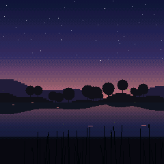
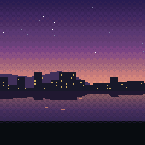
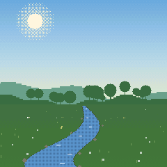
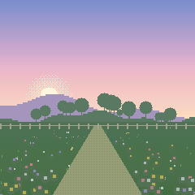
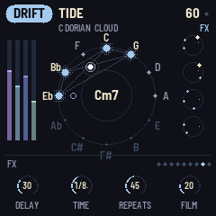
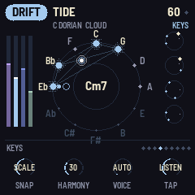
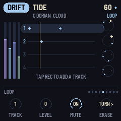
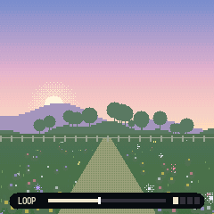
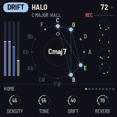

MOSS-1 manual
MOSS-1 is ambient firmware for the M-VAVE FM-1. Turn it on and it starts playing. Play the keys and the music picks up what you play.

The short version
- PRESETS picks the scene. There are 16, across three modes.
- ALGORITHM picks the space: the character of the reverb and delay.
- SELECT steps through the pages of the screen you are on: on the picture and the studio, the sound (HOME, MIX, FX, MOTION, TEXTURE, EVOLVE), the keys and SETUP. K1 to K4 change the page you are on.
- The keys play along, in key.
- Play and what you play loops by itself. REC keeps it. GLO undoes; hold it to start over. ARP freezes the sound.
- SEQ steps through the five screens: the picture, the studio, the loops, the chords and the beat. The loops, the chords and the beat each have their own pages, which SELECT steps through there.
- SAVE saves your settings and your loops.
The panel
| Control | What it does |
|---|---|
| PRESETS | Next or previous scene |
| ALGORITHM | Next or previous space |
| SELECT | Next or previous page of the screen you are on |
| HOME | The HOME page |
| SEL | The MIX page. Press again for the BEAT screen |
| ENV | The KEYS page. Press again to change how the keys play (PLAY, LISTEN or HOLD) |
| FX | The FX page. Press again for MOTION, then TEXTURE, then EVOLVE |
| LFO | The next voice for the keys, from any screen. Hold it for a second to make every layer of the loop play in that voice |
| GLO | Undo: takes out the newest layer, or what the page is on: SIMPLE goes back to the scene's own chords, BUILD removes the chord, DRUMS and BASS remove the steps (asking first), LAYERS the layer, LIBRARY the loop (asking first). Hold it: the screen says KEEP HOLDING TO CLEAR, and after a second the loop is cleared. Let go before then and nothing happens |
| K1 to K4 | The four knobs of the page you are on |
| REC | Keep: starts a recording, keeps what you just played as a layer of the loop and stops the loop from fading. See Looping |
| ARP | Freeze: the reverb holds what it has and new sound plays dry over it. In SCAPES and DRIFT the chord also stops changing. Press again to let go |
| PLAY | Start or stop the music. The screen says RESTING while it is stopped. Your loop keeps going |
| EDIT | A new variation: new chords, new bell patterns in DRIFT, new weather in SCAPES. Your loop is not touched |
| SEQ | The next screen: PICTURE, STUDIO, LOOPS, CHORDS, BEAT. The LOOPS, CHORDS and BEAT screens open on the page you last left them on |
| SAVE | Save your settings and your loop library (it lights while something isn't saved; with nothing playing, MOSS-1 saves by itself). Hold for two seconds and let go to reset the scene. Hold for six to reset everything (your saved loops stay) |
| OCT- and OCT+ | Move the keys down or up an octave, from -2 to +2 |
| MASTER | Volume |
The lit page button shows which page you are on. SAVE stays lit while there are changes you have not saved. Lit keys show the notes of the chord that is playing.
Modes and scenes
LOFI: electric piano chords on a slow, swung beat with a soft bass. Study, Rainy, Night, Tape.
SCAPES: nature with a quiet pad and a few notes. Forest, Rain, Shore, Night, Storm, Hearth, Creek.
DRIFT: slow pads and bells on loops of different lengths, so it never quite repeats. Halo, Tide, Glass, Dusk, Garden. Garden is the bright one: quicker kalimba loops, birdsong and a soft beat.
PRESETS goes through them all in one list: LOFI, then SCAPES, then DRIFT, then back to the start. MOSS-1 starts on DRIFT Garden.
Each scene sets its own HOME and MIX knobs, tempo, mood and beat. Changing scene loads them. The KEY, the space and the FX, MOTION, KEYS, SHAPE and TAPE pages stay as you set them, whatever the scene.
To get a scene back to how it started, hold SAVE for about two seconds, until the screen says LET GO TO RESET SCENE, then let go. That resets its HOME and MIX knobs, tempo, mood and beat.
To put everything back to how MOSS-1 first starts, keep holding SAVE until the screen says LET GO TO RESET ALL (about six seconds), then let go. Every setting goes back, the loop playing is cleared and the loop library is kept. Press SAVE afterwards to keep it that way.



The pages
Turn SELECT, or press a page button. In the studio view the page name is at the bottom left. In the picture view, turning a knob shows its name and value for a moment.
HOME
The main knobs. They change with the mode.
| K1 | K2 | K3 | K4 | |
|---|---|---|---|---|
| LOFI | TONE: dark to bright | DUST: crackle, then fewer bits | WOBBLE: tape wow | REVERB: size and length |
| SCAPES | WEATHER: calm to wild | LIFE: how many birds and crickets | TONE | REVERB |
| DRIFT | DENSITY: how many bell notes | TONE | DRIFT: how fast things change | REVERB |
MIX (SEL)
The level of each part.
| K1 | K2 | K3 | K4 | |
|---|---|---|---|---|
| LOFI | KEYS: the piano | BEAT | BASS | RAIN |
| SCAPES | NATURE: wind, rain, water, fire | LIFE: birds and crickets | PAD | NOTES |
| DRIFT | PAD | BELLS | BASS | AIR |
FX (FX)

| Knob | What it does |
|---|---|
| DELAY | How much goes into the delay. Low it sits behind the music; past halfway the repeats start to take over |
| TIME | 1/16 to 1/2, in time with the tempo |
| REPEATS | How long the echoes last. All the way up they build and smear but don't run away |
| FILM | Old tape: wobble, hiss, crackle, saturation, a duller top and the odd dropout |
MOTION (FX again)
What the delay and reverb do over time. Turn DELAY up on the FX page to hear it best.
| Knob | What it does |
|---|---|
| MOD | Bends the echoes' pitch slowly, from a slight chorus to seasick |
| RANDOM | Now and then, by chance: the delay jumps to another time for a few seconds (its pitch bends on the way), the echoes swell almost endlessly for a moment or the reverb blooms. Higher means more often |
| TONE | The echoes' colour. Left of noon darker with each repeat, right of noon thinner and brighter |
| SPREAD | Down, the echoes stay in the middle. Up, they bounce left and right |
TEXTURE (FX a third time)
Effects on the whole mix, for when the sound wants more character. All four start at 0, which is off.
| Knob | What it does |
|---|---|
| FILTER | A slow, resonant low-pass that opens and closes by itself, like breathing. Higher sweeps deeper and rings more |
| RESONATE | Two filters tuned to the chord playing, its root and 5th, so rain, wind and everything else ring in key. They glide to each new chord |
| LOSSY | A broken stream: the highs come and go in blocks, and further up there are short gaps |
| PUMP | The music ducks on each kick and swells back over half a beat, the lofi sidechain feel. The drums and bass stay as they are. Needs a kit |
EVOLVE (FX a fourth time)
The music changes by itself over minutes, so a scene left on for an hour is never quite the same. Each time you pick a scene it also starts a little differently: the sound a little off from your settings, and maybe on another chord of its path. It doesn't only wander off. Every few minutes it drifts back home, where the knobs, chords and melody are the scene's own again and the melody plays the same each time round. Then it slowly moves away again. It is on from the start, gently: AMOUNT 30, PACE 40, CHORDS 30, FILLS 30. Set AMOUNT, CHORDS and FILLS to 0 (they show OFF) and every scene plays just as it is set.
| Knob | What it does |
|---|---|
| AMOUNT | How far the HOME knobs and the MIX levels wander, now and then, around where you set them, gliding over ten seconds or so, and how far from them a scene starts. Your settings stay as they are; only the sound moves. A MIX level at 0 stays off. It is also how far the melody strays from its tune when away from home. At 0 there is no tune to come back to and every note is new |
| PACE | How often: every few minutes at 0, every half minute or so at 100. It also sets how long the trip away and back home takes, about ten minutes at 0 and three at 100 |
| CHORDS | The chance a scene starts on another chord of its path, that its own progression now and then takes a neighbouring chord and that now and then it plays a round of another progression (CIRCLE, DREAM, MOODY or SONG) before coming back. Your TAPPED and BUILT progressions, and a held CHORD, are left alone |
| FILLS | How much the drums get busier and calmer over time: more ghost notes and fills, then fewer. Your own pattern on DRUMS plays as you set it |
KEYS (ENV)

| Knob | What it does |
|---|---|
| SNAP | FREE plays the note you press. SCALE moves it to the nearest note in the key. CHORD moves it to the nearest note of the chord playing now |
| HARMONY | Adds softer chord notes under each note you play |
| VOICE | The sound of the keys: AUTO (the mode's own), EP, BELL, PAD, KALIMBA, CHIME, GLASS, MARIMBA, PLUCK or FLUTE. Each loop layer keeps the sound it was played in, so you can play one layer in BELL, switch to FLUTE and play the next over it. LFO steps through the voices from any screen |
| TAP | How the keys play: PLAY, LISTEN or HOLD. Pressing ENV again on this page does the same |
In short: PLAY plays. LISTEN plays, loops and steers the music. HOLD plants notes that play themselves.
PLAY: the keys just play.
LISTEN (where it starts): the music listens to you.
- What you play starts a loop by itself. Stop for two seconds and it closes and repeats, fading and changing a little each time.
- Notes you play over a running loop are added to it. Each phrase after a pause goes on its own track.
- In SCAPES and DRIFT, a note outside the chord moves the music to a chord that has it.
- DRIFT puts your note into one of its bell loops. LOFI's melody plays your notes back. In SCAPES a bird answers.
- The more you play, the busier the music gets for a while: more bells, more birds, more ghost notes and fills.
To play over a loop without adding to it, switch TAP to PLAY.
HOLD: grow the music by planting notes. It starts with nothing planted, so you hear the scene on its own.
- Tap a key to plant its note. It chimes once, then plays by itself on the beat, each planted note on its own cycle of beats, so together they drift in and out of step. Now and then chance changes a repeat: an octave up, an answer a fifth above, a low swell or a rest. It plays in the scene's own sound (or VOICE's), each note in its own place left or right.
- Tap a lit key to pull that note out.
- Up to eight notes. A ninth replaces the oldest.
- The lit keys are the notes planted. Leaving HOLD pulls them all.
- SNAP still applies, so with SCALE or CHORD a planted note fits the key.
In HOLD the keys don't loop, so REC has nothing to record.
The LOOPS screen
Press SEQ until it shows. It has the four loop pages and nothing else: turn SELECT to go through LAYERS, SHAPE, TAPE and LIBRARY, and the tabs at the top show where you are. HOME, SEL, ENV and FX open their page on the screen you came from.
Under the tabs, the looper says what it is doing and what to do next:
- LISTENING (the dot pulses): TAP is on LISTEN and it is waiting for you. Play and a loop starts by itself.
- RECORDING LAYER 1 (red): it is taking down what you play. Press REC to keep it. With TAP on LISTEN you can also just stop playing, and it loops by itself.
- ADDING LAYER 2 (red): you are playing over the loop. Press REC to keep it. With TAP on LISTEN a pause does the same.
- FADING or KEPT: the loop is playing. The line under it switches between tips.
The lanes are the layers, the dots are their notes and the line is the playhead. A mark on the left shows which layers hold notes. On LAYERS, the layer K1 has picked is highlighted, with its number and sound on the right, or OFF or EMPTY when that applies. TAPE shows on the lanes too: WARBLE bends them and AGE browns the notes.
One loop, then another: play a phrase, let it loop, keep it if you like. When you want something new, hold GLO. The old loop stays in the library and the next thing you play starts a new one.
Redo one layer: on LAYERS, pick it with LAYER and press GLO. It's gone, and the next thing you play is a new layer (with TAP on PLAY: REC, play, REC).
LAYERS

A loop holds up to eight layers. This page works on one at a time.
| Knob | What it does |
|---|---|
| LAYER | Picks the layer, 1 to 8. Its lane is marked and its number and sound show on the right |
| LEVEL | That layer's level. All the way down is OFF, which mutes it |
| MUTE | Right mutes that layer, left brings it back. It stays in the loop |
| SHIFT | Moves that layer a sixteenth later (right) or earlier (left) for each click |
On this page GLO takes out the layer you picked. A new layer always starts at the same level, whatever the layer before it in that place was set to. When all eight are used, new notes go on layer 8.
SHAPE
| Knob | What it does |
|---|---|
| FADE | How fast the loop dies away while it is not kept. When every note has faded, the loop is gone |
| MUTATE | How often notes move to a nearby note, jump an octave or move in time |
| SHIFT | Slide the whole loop a sixteenth later (right) or earlier (left) for each click |
| SPEED | 1/2, 1x, 2x, REV, REV 1/2 |
TAPE
The loop's own tape. These change only the loop, not the rest of the music.
| Knob | What it does |
|---|---|
| WARBLE | Wobbly pitch, like a stretched tape |
| DIRT | Saturation, then grit as you turn it up |
| AGE | A copy of a copy: darker, thinner, narrower and a little quieter |
| SMEAR | Backwards swells under your notes, and softer, slower repeats |
LIBRARY
Your last eight loops, kept for you. The LOOPS screen lists them, newest first, with > by the one playing.
| Knob | What it does |
|---|---|
| LOOP | Turn to a loop and it starts playing |
To delete the loop you picked, press GLO: the screen asks DELETE LOOP 2?. Press GLO again within six seconds and it is taken out of the library. Waiting or picking another loop lets it go.
The CHORDS screen
Press SEQ until it shows. It has three pages: turn SELECT to go between them, and the tabs at the top show where you are. On each, the keys do something different:
- SIMPLE shapes the chords of the key. The keys pick up to four of them for your own progression.
- BUILD makes a progression of any chords at all. The keys set each chord's root.
- PLAY plays chords live. Each key plays a whole chord.
HOME, SEL, ENV and FX open their page on the screen you came from. SEQ comes back to the CHORDS page you left.
SIMPLE
The harmony under everything, in the KEY and MOOD on SETUP: for sadder or brighter chords, change MOOD there. The screen shows the chord playing, the path and how the chords change.
| Knob | What it does |
|---|---|
| CHORD | AUTO lets the scene choose. Turn it to I to VII and the music moves to that chord of the key, then stays there. In C major, IV is F and VI is A minor. Playing doesn't move a chord you picked, and while it is held PATH and BUILD wait: turning PATH sets CHORD back to AUTO |
| CHANGE | How often the chords move by themselves: STILL (they don't), SLOW, NORMAL or OFTEN |
| PATH | The order the chords go in. SCENE is the scene's own. CIRCLE is vi ii V I, DREAM I vi IV V, MOODY vi IV I V, SONG I V vi IV, DRONE just I and IV. TAPPED is your own, tapped on the keys (below). BUILT is the one you make on the BUILD screen |
| COLOR | LUSH: 7ths and 9ths, as the scenes are made. PLAIN: simple three-note chords. SUS: a 4th in place of the 3rd, open and unresolved. OPEN: a whole tone above the root in place of the 3rd, airy. SUS and OPEN only change a chord where the key has that note, so they never clash |
GLO puts the chords back to the scene's own: PATH to SCENE and CHORD to AUTO. Your own progression is kept for when you turn PATH to TAPPED again.
Your own progression: on this page the keys pick chords instead of playing notes. Tap up to four keys in a row. Each one is the chord built on that note of the key (a note outside the key counts as the one below it), and the music moves to it so you hear it. PATH turns to TAPPED and plays them in turn, with CHANGE setting how long each lasts. The screen names them and lights the one playing. Pause for six seconds and the next tap starts a new progression. In C major, tapping C, A, F and G plays I vi IV V. It is kept with your settings, so turning PATH away and back to TAPPED finds it again.
LOFI changes chord on the next bar, so it stays in time with the beat. SCAPES and DRIFT drift into it within a second.
Two chords, slowly: CHANGE to SLOW, PATH to DRONE.
Stay on one: CHORD to VI for a minor, wistful hold. Turn it to IV later for a lift.
BUILD
A progression of any chords, in the key or not: Cm7 to Ebdim7 to Abmaj7, say. Up to eight chords, each with its own type and length. The page shows them in two rows: the one you chose has a ring, the one playing a line under it. The first change you make turns PATH to BUILT, so you hear it.
| Control | What it does |
|---|---|
| Keys | Set the ringed chord's root, as the chord the key has on that note (one off the key is major). Tap again within six seconds, or turn a knob and then tap, and it goes on to the next chord: the screen says NEXT KEY. So you can play a progression in and colour each chord as you go. Played in from chord 1 and then left alone, it ends where you stopped: C, Am and F leave three chords. Turn CHORD instead and the rest stay |
| CHORD | Picks a chord. One past the last is a new one (+) |
| ROOT | The chosen chord's root, any of the twelve notes |
| TYPE | maj, m, 7, maj7, m7, 6, m6, 9, m9, maj9, add9, sus2, sus4, 7sus4, dim, dim7, m7b5, 7b5, aug |
| LENGTH | How long it lasts, against the scene's own chord length: 1/2x, 1x, 2x or 4x. CHANGE still scales them all |
GLO takes out the ringed chord. One always stays.
The roots stay what you set when you change the KEY.
Chords outside the key bend everything else to fit. The melodies and the keys you play (SNAP SCALE) use the key with the fewest notes changed to hold the chord, and HARMONY adds the chord's own notes. So with an Ebdim7 in C major they play Eb and Gb in place of E and G, and nothing clashes with it. Notes you play don't pull a BUILT progression to another chord. The CHORDS screen's PLAY page with FOLLOW on does, until the next change.
PLAY
Each key plays a whole chord, as a chord instrument does. With TYPE on KEY every key plays the key's own chord on that note, so every chord fits the key. Turn TYPE to a kind and every key plays that kind, for parallel chords. The chord you last played shows big in the middle. In LISTEN the chords go into the loop like any notes.
| Knob | What it does |
|---|---|
| TYPE | KEY: the key's own 7th chord on each note (a note off the key plays major). Or one kind for every key: maj, m, 7, maj7 and the rest, as on BUILD |
| VOICING | How the notes are spread. CLOSE: stacked over the root. OPEN: the root an octave down and the rest over two octaves. WIDE: the root down, then the 3rd and 7th (a three-note chord's 5th, an octave up) and the 9th or 5th above, airy. SMOOTH: the root down and the rest kept close to the last chord, so a progression flows |
| STRUM | 0 plays the notes together. Turn it up and they roll in from the bottom, slower the higher it is |
| FOLLOW | ON: the music moves to the chord you play, as on SIMPLE's keys, unless SIMPLE's CHORD holds one or ARP has frozen it. OFF: it keeps its own chords and yours play over them |
Play a progression by hand: PLAY, TYPE on KEY, VOICING on SMOOTH, STRUM about 20. Play C, A, F and G one after the other and hold each for a while: the music follows you.
The BEAT screen
Press SEQ until it shows, or SEL twice. Drums and a backing bass, in any mode. The LOFI scenes and DRIFT's Garden start with a kit; the others start with none. Three pages, as on the CHORDS screen: turn SELECT to go between them.
BEAT
The beat in four knobs. The page shows the kit, pattern and bass by name, and the pattern's steps.
| Knob | What it does |
|---|---|
| KIT | OFF, SOFT, LOFI, BRUSH, PULSE, TICK, WOOD |
| PATTERN | AUTO, BOOMBAP, HALF, FOUR, BOSSA, HEART, SHUFFLE, BROKEN, WALTZ, SPARSE, MY BEAT. AUTO is the scene's own groove in LOFI and SPARSE elsewhere. MY BEAT is the one you make on DRUMS |
| SWING | AUTO is the pattern's own (MY BEAT keeps the swing of the pattern it was copied from). 50% is straight; up to 66% is a lazy, triplet swing. It works on every pattern |
| LEVEL | How loud the drums are, and the ROOT, WALK or MY LINE bass |
GLO on this page goes back to the scene's own kit, pattern and bass. MY BEAT and MY LINE stay for when you pick them again.
DRUMS
A row of sixteen steps for each drum: KICK, SNARE, GHOST (a quiet snare), HAT, OPEN (hat) and PERC. The first 16 keys are the steps; the six keys above them pick a drum and play it. Tap a step to turn it on or off for that drum.
You always edit what you hear: the first step you tap on a preset pattern copies it into MY BEAT, and PATTERN turns to MY BEAT. So pick the pattern closest to what you want on BEAT, then change it here. If MY BEAT already holds a pattern you made, the first tap asks REPLACE MY BEAT?, and a second tap does it; turn PATTERN to MY BEAT on BEAT to go back to yours instead. WALTZ is a bar of 12 steps, and so is a MY BEAT copied from it. With no kit, the first tap picks LOFI so you hear it.
| Knob | What it does |
|---|---|
| DRUM | The drum the keys set, and you hear it |
| LEVEL | That drum's level |
| CHANCE | How often its steps play. 100% always; lower and it skips now and then, so the beat breathes |
| SHIFT | Moves that drum's steps a sixteenth later (right) or earlier (left) round the bar, for each click |
GLO removes all the steps of the drum you picked; it asks first, so press GLO again to do it.
BASS
A bass line of sixteen steps that follows the chords: each step is a role in the chord playing, so the line stays right when the chords change, on SIMPLE, BUILD or PLAY. The first 16 keys are the steps; the six keys above them pick ROOT, 3RD, 5TH, 7TH, OCTAVE or LEAD-IN (a semitone under the root, leading into it) and play it. Tap a step to put that note there, tap it again to take it away. The first step turns BASS to MY LINE: from ROOT or WALK it starts as a copy of that line, from AUTO or OFF with just the root on 1. If you already made a line, it asks first, the same way as DRUMS.
| Knob | What it does |
|---|---|
| BASS | AUTO (the mode's own), OFF, ROOT (on the chord root, with the kick), WALK (moves through the chord), MY LINE (the one you make here) |
| TONE | Round and soft to a growl |
| GLIDE | How far each note slides into the next |
| LENGTH | How long each note holds, in sixteenths |
GLO removes the whole line; it asks first, so press GLO again to do it.
A lofi beat of your own: BEAT, KIT LOFI, PATTERN BOOMBAP, SWING 58%. DRUMS, HAT CHANCE to 80%. BASS: ROOT on 1 and 11, 5TH on 8, LEAD-IN on 15.
SETUP (SELECT back from HOME)
| Knob | What it does |
|---|---|
| TEMPO | Beats per minute |
| KEY | The key everything plays in |
| MOOD | MAJOR, MINOR, DORIAN, LYDIAN or MIXOLYD (Mixolydian) |
| SLEEP | Fades out and stops after 10 to 90 minutes |
SLEEP fades the sound over the last third of the time, five minutes at most. At the end the screen says GOODNIGHT, everything goes quiet (the keys too) and SLEEP turns itself off. Press PLAY to start again. Changing SLEEP starts the timer again. The studio view shows the minutes left.
The CPU number on this page shows how hard the FM-1 is working.
Spaces
Turn ALGORITHM. Each space changes the whole sound, reverb and all, and works with any scene.
| Space | Sound |
|---|---|
| HALL | A big, soft room |
| PLATE | Shorter and brighter |
| CLOUD | Huge, slow and blurred |
| SHIMMER | A glowing octave above the reverb |
| TAPE | The whole mix on a wobbly tape, its echoes dark and running into the reverb |
| REVERSE | Everything swells in backwards |
| DEEP | An octave below everything, in a dark cave |
| DUB | Dotted echoes that keep going, dark and thin, over a small springy room |
| DREAM | A lush, wide chorus in a soft, shimmering room |
| RADIO | Thin, narrow and a little driven, like a small transistor radio |
| WATER | Muffled, slow and swaying, as if under the surface |
| GLITCH | The echoes stutter and jump between short times |
| PULSE | The sound throbs and pans from side to side in eighth notes |
DUB and GLITCH lean on the delay, so they sound like themselves even with DELAY low: DELAY and REPEATS can't go below their own level there. DUB keeps its echoes on a dotted eighth, so FX's TIME does nothing in DUB, and GLITCH picks its own times. Everything else on FX and MOTION works as usual.
Looping

With TAP on LISTEN (where it starts), you just play:
- Play a few notes and stop. After two seconds of quiet they loop.
- Play again and the new phrase goes on top as a new layer, up to eight.
- The loop slowly fades while you leave it, and changes a little each time round (SHAPE sets how much).
- Press REC to keep it. It stops fading. Press REC while you play and that phrase is kept as a layer at once, without waiting for the pause.
- Press GLO to undo the newest layer. Hold GLO for a second to clear the loop and start a new one.
With TAP on PLAY nothing loops by itself. Press REC to start recording, play, then press REC again to keep it as a loop. Press REC once more to record another layer over it, and again to keep that.
Every loop goes into the library by itself. The one playing is kept up to date as you add layers, and when you clear it and start a new one, the old one stays in the list. The library holds your last eight. To keep them after you turn the FM-1 off, press SAVE. Until you do, LIBRARY shows a red dot by each loop that isn't saved yet, and the SAVE button stays lit. Writing to the flash stops the sound for a moment, so MOSS-1 only does it when you press SAVE, or by itself when nothing is playing: the music stopped with PLAY and no loop going, or the sleep timer done.
When there is a beat (LOFI, or a kit on the BEAT screen), the loop is a whole number of bars, 1, 2, 4 or 8, and its notes sit on the beat's grid with its swing, so it stays in time with the drums. Without a beat the loop keeps the timing you played.
The bar at the bottom of the picture shows the loop: red while recording, then FADING or KEPT. The eight squares next to it are the layers: bright when on, grey when off, dark when empty. REC's light blinks fast while recording, slowly while the loop fades and stays on when it is kept.
A recording stops by itself after 60 seconds. A loop holds 128 notes; past that, new notes replace the quietest. The loop keeps playing when you press PLAY to stop the music, so you can play over silence. HOLD's notes are not looped.
The five screens
Press SEQ.
Picture: a pixel landscape for the scene. Notes light up fireflies, windows or flowers. Rain, wind, birds and lightning follow the sound. FROZEN at the top means ARP's freeze is on.
Studio: the notes. The wheel has all twelve notes in fifths. The chord is lit and joined by lines, and each note you hear blooms where it falls. The bars on the left are the part levels. The column on the right shows DRIFT's loops, the beat when a kit is on or SCAPES's weather. The knobs are at the bottom.

Loops: the looper on its own, with only the loop pages. See The LOOPS screen.
Chords: the harmony, with SIMPLE, BUILD and PLAY. See The CHORDS screen.
Beat: the drums and bass, with BEAT, DRUMS and BASS. See The BEAT screen.
MIDI
Over USB, the keys send notes on channel 1, and notes from the computer play like the keys (single notes, also on the CHORDS screen's PLAY page).
Recipes
Falling asleep: SCAPES Rain or Night. SETUP, SLEEP to 30m. Turn MASTER down.
Study: LOFI Study. FX, FILM to 40. MIX, BEAT lower if it distracts.
Play a little, listen a lot: DRIFT Dusk, space CLOUD. Play three or four notes and stop. SHAPE, FADE low and MUTATE high.
Backwards garden: DRIFT Halo, space REVERSE. SHAPE, SMEAR to 70. Play slowly.
A garden you plant: any scene, TAP on HOLD (press ENV twice). Plant three or four keys and leave it. Pull one and plant another now and then.
Echoes that wander: FX, DELAY to 60 and REPEATS to 70. MOTION, MOD to 50 and RANDOM to 60. Play a few slow notes and let the delay move them around.
Recording
The FM-1 shows up on your computer as an audio input over USB. Record it in any audio app, or use the tape deck (https://theowecker.github.io/fm1-moss/tape/) in Chrome or Edge:
- Plug in the FM-1 and press Connect. Play here sends the FM-1's sound through your computer's speakers or headphones too, a few milliseconds late. It remembers the setting.
- Press the big button, or space, to record. Press it again to stop.
- Each take can be named, played back and deleted. Takes stay in the browser until you delete them.
- WAV downloads the take at full quality, for a video editor.
- Make video turns the take into an MP4 with a scene picture (or your own) as the image, ready to upload to YouTube. Pick the picture above the list.
The same page reads your loop library (Read loops) and downloads each loop as a MIDI file, one MIDI track per layer.
Going back to stock firmware
Open <https://thefirmwarehub.com> in Chrome or Edge with the FM-1 plugged in and install the M-VAVE firmware.
If the FM-1 ever stops starting, hold OCT- while you turn it on. It comes up in the chip's own update mode, and <https://thefirmwarehub.com/tools/rescue/> puts the stock firmware back.